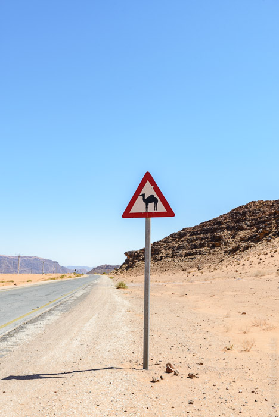
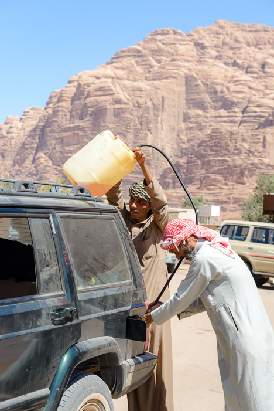
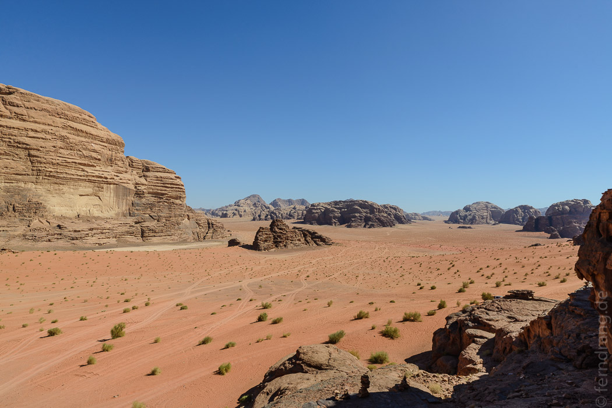
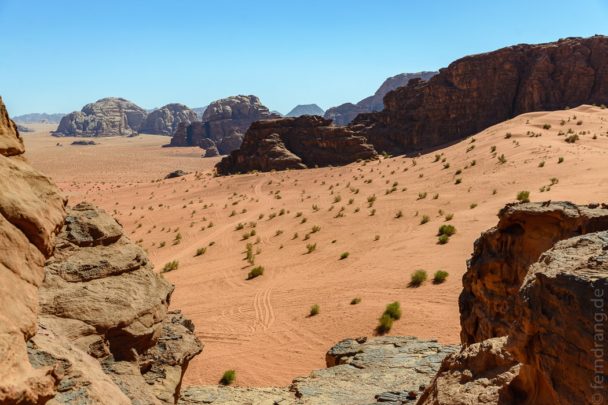
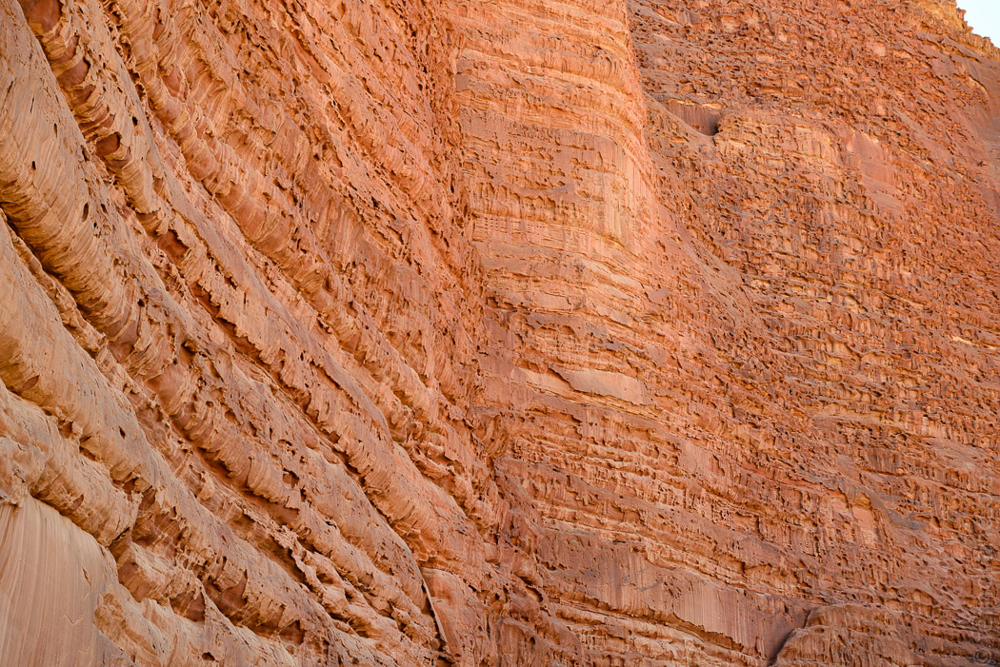
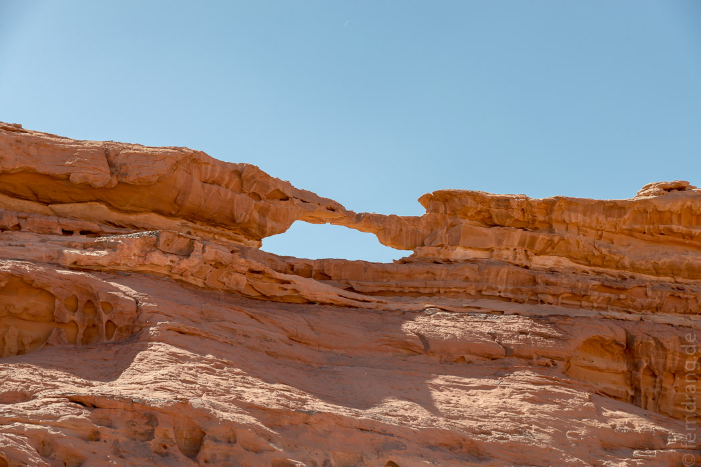
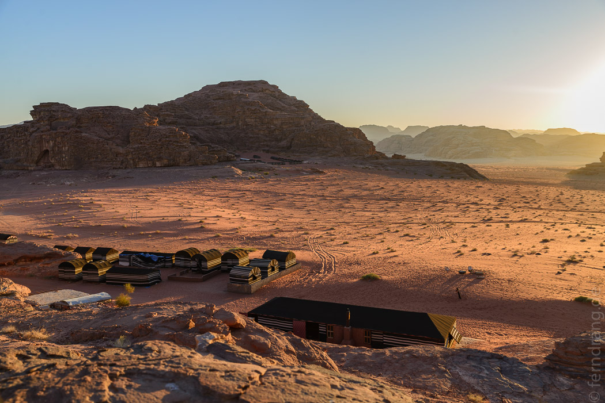
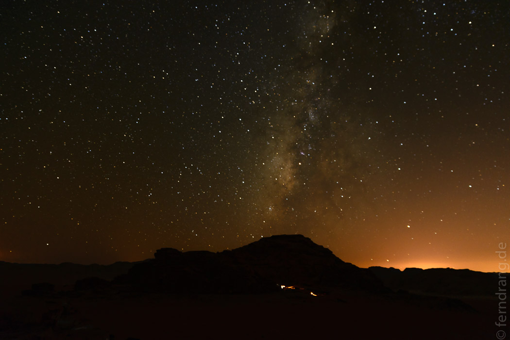
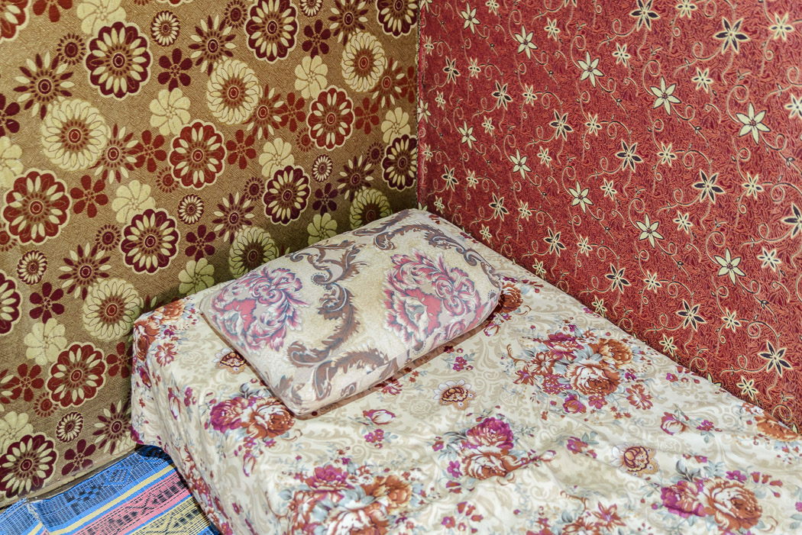

27/09/2016
Wadi Rum
Im Südosten des Landes liegt das berühmte Wadi Rum. Eine echte Wüstenregion zwischen bizarren Bergen. Am Visitor Center verbreiten die aggressiven Tourvermittler, die sich fast um uns (immerhin nicht mit uns) prügeln, schlechte Stimmung. Um nicht dabei zu sein, wenn der Wirrkopf, der uns schon am Auto abgefangen hat, am Herzinfarkt stirbt, schließen wir uns zwei anderen Reisenden an, die schon einen guten Preis ausgehandelt haben. Im hässlichen Wadi Rum Village ganz in der Nähe laden wir unsere Sachen in einen Jeep und lassen das Auto stehen.
Unser Fahrer sieht aus wie der junge Bruder des Prinzen von Zamunda und ist glücklicherweise ganz entspannt. Wir drehen zwar noch ein paar Extrarunden durch das Dorf, um unvorhersehbare Besorgungen wie Benzin, Öl und sein Mittagessen zu machen und krachen dabei mit einem anderen Jeep zusammen ("Don't worry, only plastic"). Aber dann sind wir auch schon in der Wüste.
 Die Fahrten zwischen den Stopps sind immer nur kurz, so dass es sich auch zu fünft im Auto aushalten lässt. Sehenswürdigkeiten wie ein schwarzes Plastikrohr, aus dem Wasser sprudelt, ("Lawrence's Spring") oder eine eingestürzte Mauer ("Lawrence's House") sind nicht so spektakulär wie die Fahrt durch die menschenleere, monumentale Landschaft. Sanfte rote Dünen mit grünem Buschwerk liegen zwischen schroffen, verwitterten Bergen. Auf schwarzen Granitschichten sitzt brauner Sandstein, der von Wind und Wetter so zerfressen ist wie wurmstichiges Holz. Aus den Felsen sind unendlich viele kleine Reihen medusenhafter Säulen ausgewaschen, wie man es oft im inneren von Höhlen sieht. Die senkrechten Wände sehen aus, wie von Wahnsinnigen (vielleicht Nabatäern?) in geheimnisvollen Glyphen beschriftet. Lawrence (von Arabien) schreibt ergriffen von diesem Ort, an dem sogar die geschwätzigen Araber in ehrfurchtsvolles Schweigen verfallen.
   Die Nacht verbringen wir in einem der zahlreichen, lieblosen Beduinen-Camps in der Rum. Die "Zelte" sind aus Rohren und Plastikplane fest installiert und zur Schau von außen mit dem typischen schwarz-weiß gestreiften Stoff behangen. Innen sind sie in blindmachender Kombination mit opulenten Blumentüchern ausgehangen. Das Bettzeug ist widerlich und die Decke so schwer, dass man darunter jemanden gefangen halten könnte. In der kalten Nacht greifen wir jede Stunde zu einem weiteren Kleidungsstück bis wir notgedrungen auch unter die Bettdecke kriechen.
  